Chapter 9 · Part 2 — Tiptoe
The lion lifted his head and yawned. His giant teeth gleamed in the sunlight. The lion turned his head as he looked around sleepily.
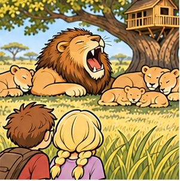
Jack held his breath as the lion’s gaze rested on him. The lion sat straight up. His piercing yellow eyes met Jack’s.
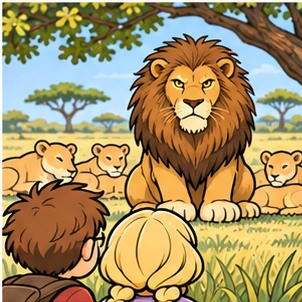
Jack’s heart raced. His mind raced. He remembered something he’d read—lions avoid giraffes.
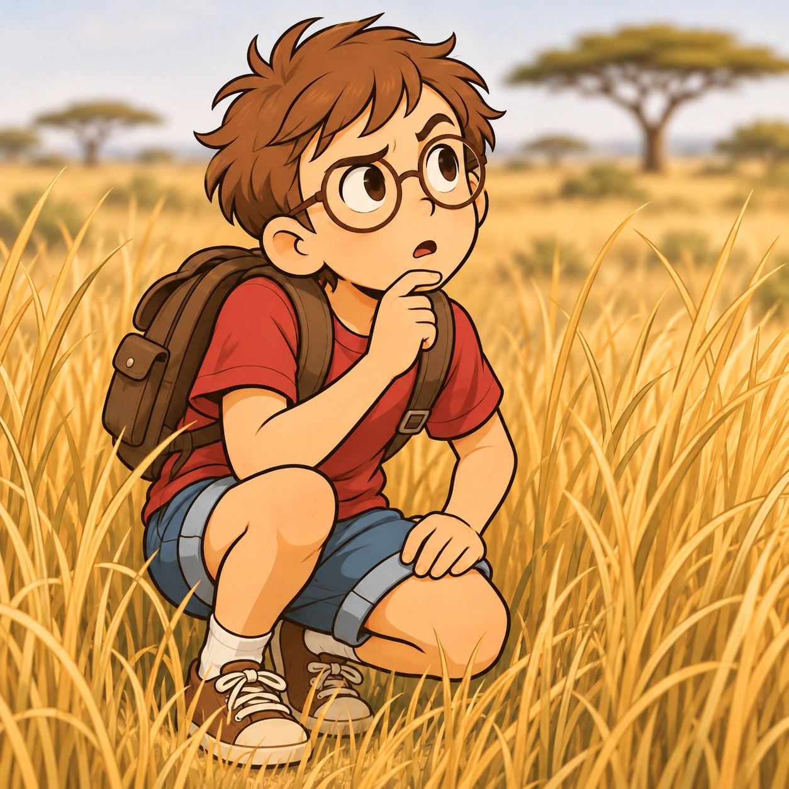
Jack looked around. There was a giraffe walking toward the tree that the magic tree house was in.
Suddenly, he had a new plan.
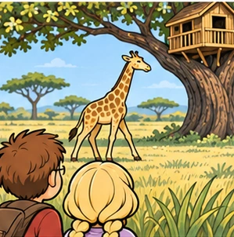
“Get under that giraffe,” he whispered.
“Now you’re the one who’s nuts,” Annie whispered back.
But Jack grabbed her hand. He pulled her over to the giraffe and underneath it.
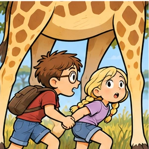
The giraffe’s legs were so long, Jack and Annie could stand up under it. Jack’s head barely brushed the giraffe’s golden belly.
The tall creature froze for a few seconds. Then she moved slowly toward the tree.
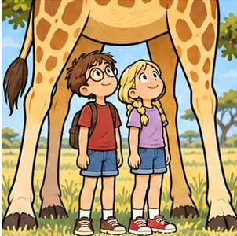
Jack and Annie walked in the same rhythm as the giraffe.
They got closer and closer to the tree house—and closer and closer to the pride of lions.
The big lion had stood up. He watched them moving under the giraffe.
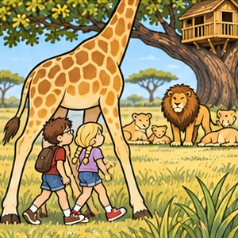
When the rope ladder was just a few feet away, Jack and Annie dashed out from under the giraffe to the rope ladder.
Annie scrambled up first.
Jack followed right behind her.
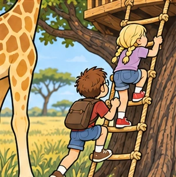
As they climbed, the lion growled and leaped at the ladder.
The hyenas laughed.
Jack climbed faster than he’d ever climbed. He leaped after Annie into the tree house.
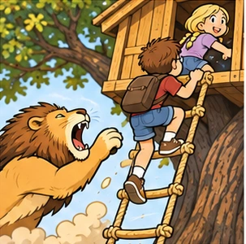
Annie had already unrolled the scroll. The riddle was gone. In its place was one shimmering word:
HONEY
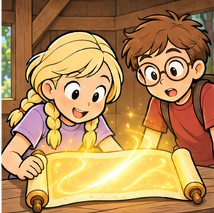
Jack grabbed the Pennsylvania book. He opened it and found the picture of the Frog Creek woods.
“Iwishwecouldgothere!” he said.
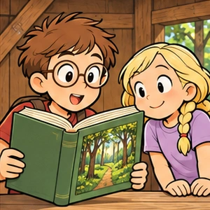
Just then, the giraffe stuck her head through the window.
“Bye, honey!” said Annie, and she kissed the giraffe on the nose.
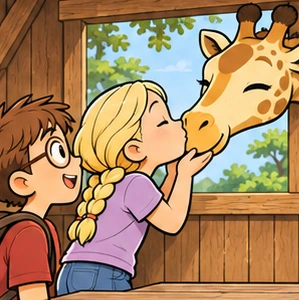
The wind started to blow.
The tree house started to spin.
It spun faster and faster.
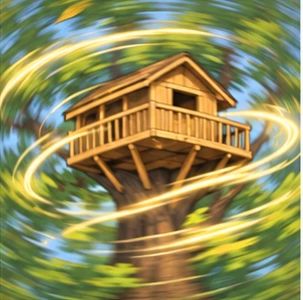
Then everything was still.
Absolutely still.
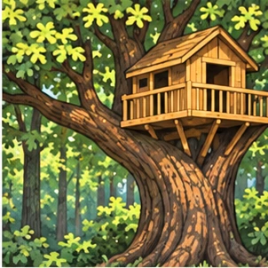